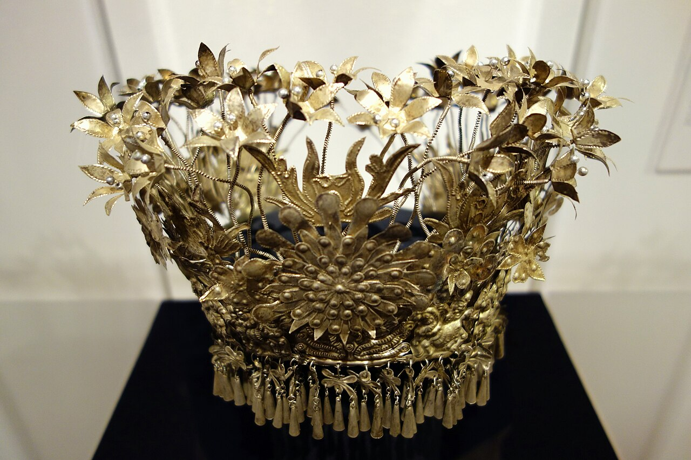

蝶纹
蝴蝶常出现在苗绣和银饰中，与生命繁衍、祖源叙事等文化记忆相连。对称的翅形适合组织成连续纹样。

针尖上的自然观
同一纹样在不同地区可能拥有不同名称和含义。这里以视觉特征为线索，理解纹样如何从自然中生长。
蝴蝶常出现在苗绣和银饰中，与生命繁衍、祖源叙事等文化记忆相连。对称的翅形适合组织成连续纹样。
鸟的羽翼、飞翔姿态与栖息场景被概括为几何线条，常与花木、太阳等元素组合。
花瓣、藤蔓与叶片源于对山地植物的观察。绣娘通过夸张和重组，让纹样获得饱满节奏。
菱形、回旋与连续折线便于在织物边缘延展，也能与具象动植物纹样相互穿插。

色彩不是装饰的附属
深蓝、青黑常作为稳定底色，红、橙、桃红、翠绿等高明度色彩沿袖口、领缘和围腰铺开。银饰的冷光再加入其中，形成布、线、金属三种质感的对比。

SILVER ORNAMENT
苗族银饰种类丰富，包括银冠、银花、项圈、压领、耳环、手镯、腰链、银铃和纽扣等。中国非物质文化遗产网将苗族银饰制作技艺列为国家级非物质文化遗产代表性项目。
带走一份阅读线索
下载可打印的文字笔记，记录你最感兴趣的形制、纹样和传承方式。